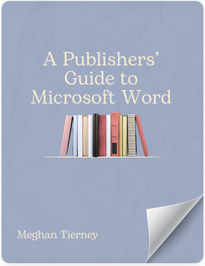
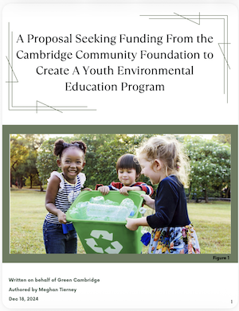

Word Manual

This 30-paged manual was designed to intentionally provide my audience, publishers, with a guide to creating content in Microsoft Word. The document is a series of modular topics that provide navigation for a variety of features in Word that would prove beneficial for those in the publishing industry. As a semester-long project, this document required drafting, workshops, and revision, culminating in a piece I am proud to display.
Usability Testing Memo
